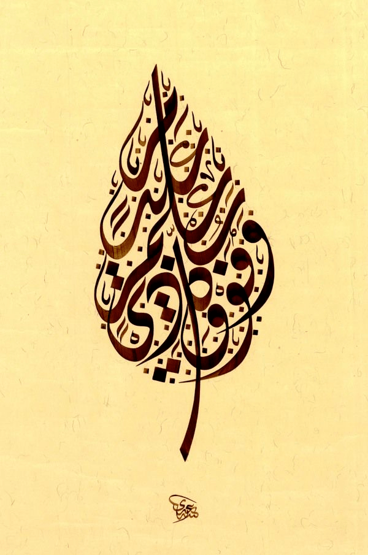

Ebru
Marbled paper or "Ebru" is an art form that was developed in Central Asia and Ottoman Empire in the fifteenth century. Traditionally, this paper was used for borders on Ottoman panels and miniatures, and for the inside covers and flyleaves of books. In the 17th century European travelers collected examples of these papers and thus the Ebru art was introduced to Europe, where it became very popular too.

CALLIGRAPHY
Marbled paper or "Ebru" is an art form that was developed in Central Asia and Ottoman Empire in the fifteenth century. Traditionally, this paper was used for borders on Ottoman panels and miniatures, and for the inside covers and flyleaves of books. In the 17th century European travelers collected examples of these papers and thus the Ebru art was introduced to Europe, where it became very popular too.
Welcome to the Arts of the Middle East! The purpose of this website is to reveal the cultural world of the Middle East and enlighten the reader on the wonders it holds. The arts presented here all fall under the name Islamic art, they are not restricted to religious art, but instead includes all of the art of the rich and varied cultures of Islamic societies.
Islamic art encompasses the visual arts produced in the Islamic world.Islamic art is difficult to characterize because it covers a wide range of lands, periods, and genres, including Islamic architecture, Islamic calligraphy, Islamic miniature, Islamic glass, Islamic pottery, and textile arts such as carpets and embroidery. It comprises both religious and secular art forms. Religious art is represented by calligraphy, architecture and furnishings of religious buildings, such as mosque fittings (e.g., mosque lamps and Girih tiles), woodwork and carpets. Secular art also flourished in the Islamic world, although some of its elements were criticized by religious scholars.
Early development of Islamic art was based on Islamic ideals, which were reflected in the art. For example, Minars were constructed to help the Muezzin in spreading the recitation of the Adhan. Islamic art was also represented differently from culture to culture and molded with local traditions.Though the concept of "Islamic art" has been criticised by some modern art historians as an illusory Eurocentric construct,the similarities between art produced at widely different times and places in the Islamic world, especially in the Islamic Golden Age, have been sufficient to keep the term in wide use by scholars.